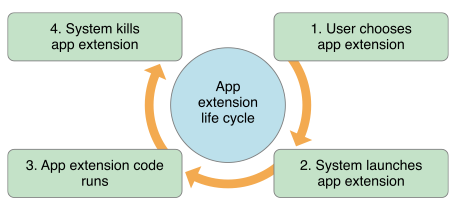
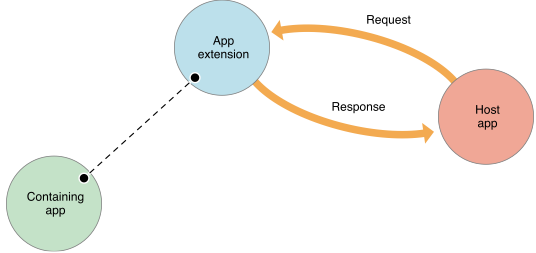
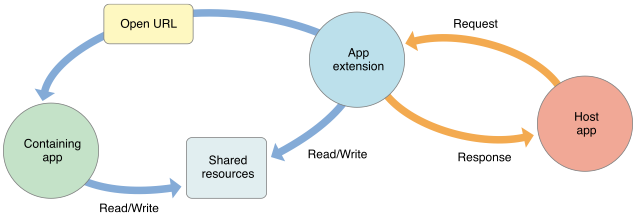

Author: Charles Zhu
Summary: ios8 app extension
Intro
app extension是iOS8引入的功能，使得iOS8也有了“插件”系统。虽然一时还不知道可以做些什么应用，但我相信会有杀手级的extension出现而且某种程度会影响到app的生态系统发展。所以，我们需要了解并熟悉如何制作app extension。本系列会以官方文档为指引，按图索骥，拨开app extension的面纱(主要侧重iOS)。
App Extension
有很多关于App Extension的介绍，所以就不详细介绍，这里侧重介绍Extension的生命周期以及和其他app的通信。
术语
- host app: 用户在某个app中启用了extension，该app就叫host app
- containing app: extension不能单独作为target存在，必须依附在某个具有普通app的工程内，该app就是containing app。一个containing app可以有多个extension。
- app extension:
当下载了含有extension的containing app，那么如果某个app可以使用该extension，那么就可以在app(此即host app)中调用extension
生命周期

extension是由用户选择启动，然后作为一个单独的“程序”运行，直到运行结束，系统kill该extension，至此结束extension的使命。需要说明的是，无法在containing app中启用extension。
尽管extension通常是在host app中启动，但是extension的运行过程却不受 host/containing app 的“干预”——不能在host或containing app 中影响extention的运行。但是系统提供了某种机制使得三者之间可以共享部分数据。
通信
与host app 通信

两者关系干净利落：一个请求，一个响应，没有其他藕断丝连。iOS8中UIViewController包含了extensionContext的新属性。请求的所有信息都包含在该context属性中。
该图的虚线表明extension和containing没有直接的通信。
与containing app 通信
从某种意义上，extension是“依附”着containing app的，既然不能直接通信，那么必然有迂回的方式。

上图中显示extension可以通过 OpenURL的方式打开自己的contaning app。更为重要的是，两者直接有一个shared resources区域来交换数据信息。
其他注意事项
由extension的工程必须包含arm64或x86_64框架，另外extension :
- 不能访问相机和麦克风
- 不能执行长时间的后台任务，如果要上传／下载的话，需要使用
NSURLSession - 不能访问
UIApplication对象 - 不能接受通过 AirDrop 传送的数据
创建App Extesnion
使用Xcode6创建一个application，然后在new一个target，这时模板选项里会出现 "Application Extension"，选择任一添加。这样运行安装app后，连带之前的扩展也一并安装了。
extension的工程文件

extension的组成很简单：
- ViewController: extension的主要实现部分
- storyboard: extension的UI界面入口
- Info.plist: 老朋友了，主要关注
NSExtension键值。以后对一些限制，比如文件类型都在这里添加 - entitlements: optional，如果要启用share resource，就需要开启app group，那么会自动生产该文件。
extension的常见处理流程
如前所说，请求的extenison的所有信息可以通过UIViewController的extensionContext获取。至于相关信息怎么获取，下面分门别类细说。
debug
选中extesnion的scheme，然后debug，Xcode6会让你选择某个host app，然后进入该host app。在host app启用extension后，就可以debug了。
distribution
提交containing app即可——没有实践过，itunes connect是否要设置，暂时不详
处理常见场景
在开始实践extension之前，有必要直到一些常见问题如何处理。
使用嵌入式框架共享代码
constaining和extension可以通过该方式共享代码，需要注意的是extension中不是所有API都可以使用，并且要包含64位的架构。这两点是文档中Apple反复提及的，一旦有违反这样的情况而进行提交的会直接被打回。
添加完库后，要将target的"Require Only App-Extension-Safe API"设置为"YES"。
shared resources
前面说过extension和containing可以共享数据。这时分别对containing 和extension target启用"App Group"。Xcode6会自动获取group名，当然也可以自行添加。共享数据的读写是通过老朋友NSUserDefault:
// Create and share access to an NSUserDefaults object.
NSUserDefaults *mySharedDefaults = [[NSUserDefaults alloc] initWithSuiteName:@"com.example.domain.MyShareExtension"];
// Use the shared user defaults object to update the user's account.
[mySharedDefaults setObject:theAccountName forKey:@"lastAccountName"];
对共享区域的数据，extesnion和containing都有读写权限，所以某一方进行读写后要及时同步数据。
访问网页
Share和Action类型的extension可以通过safari访问某个页面，执行你设定的js脚本，然后把执行的结果返回给extension。注意可以在extension执行前就执行脚本访问web页面，也可以在extension执行完毕后访问或修改web页面(该情形只在iOS有效)。
步骤：
- 创建js文件，文件中要有一个名为
ExtensionPreprocessingJS的全局对象 - 修改plist：将
NSExtensionActivationRule的属性NSExtensionActivationSupportsWebPageWithMaxCount设置为非零的值 - 当extension开始后，使用
NSItemProvider获取js运行的结果 - iOS中如果要传递给js文件参数， 也通过
NSItemProvider
为了让safari响应extension的js文件，需要添加：
<key>NSExtensionAttributes</key>
<dict>
<key>NSExtensionJavaScriptPreprocessingFile</key>
<string>MyJavaScriptFile</string> <!-- Do not include the ".js" filename extension -->
</dict>
js文件的写法
sample:
var MyExtensionJavaScriptClass = function() {};
MyExtensionJavaScriptClass.prototype = {
run: function(arguments) {
// Pass the baseURI of the webpage to the extension.
arguments.completionFunction({"baseURI": document.baseURI});
},
// Note that the finalize function is only available in iOS.
finalize: function(arguments) {
// arguments contains the value the extension provides in [NSExtensionContext completeRequestReturningItems:completion:].
// In this example, the extension provides a color as a returning item.
document.body.style.backgroundColor = arguments["bgColor"];
}
};
// The JavaScript file must contain a global object named "ExtensionPreprocessingJS".
var ExtensionPreprocessingJS = new MyExtensionJavaScriptClass;
解释和说明：
- 当safari加载了js后，立即执行
run函数，执行的结果通过completionFunction返回给extension finalize函数是extension执行completeRequestReturningItems:completion:后执行，extesnion传递的参数在arguments中
对应的extension中：
-
获取run执行的结果：
[imageProvider loadItemForTypeIdentifier:kUTTypePropertyList options:nil completionHandler:^(NSDictionary item, NSError error) { NSDictionary results = (NSDictionary )item; NSString *baseURI = [[results objectForKey:NSExtensionJavaScriptPreprocessingResultsKey] objectForKey:@"baseURI"]; }];
-
传递给finalize：
NSExtensionItem extensionItem = [[NSExtensionItem alloc] init]; extensionItem.attachments = @[[[NSItemProvider alloc] initWithItem:@{NSExtensionJavaScriptFinalizeArgumentKey: @{@"bgColor":@"red"}} typeIdentifier:(NSString )kUTTypePropertyList]]; [[self extensionContext] completeRequestReturningItems:@[extensionItem] completion:nil];
上传和下载
使用NSURLSession，经过测试，upload task session 不能在extension中使用。
声明Share/Action extension支持的数据类型
sample：
<key>NSExtensionAttributes</key>
<dict>
<key>NSExtensionActivationRule</key>
<dict>
<key>NSExtensionActivationSupportsImageWithMaxCount</key>
<integer>10</integer>
<key>NSExtensionActivationSupportsMovieWithMaxCount</key>
<integer>1</integer>
<key>NSExtensionActivationSupportsWebURLWithMaxCount</key>
<integer>1</integer>
</dict>
</dict>
不支持的数据类型设置值为0或者移除该键。
适配iOS8前的containing app
使用了嵌入式框架后，也能继续兼容iOS8之前的系统。这就要使用dlopen，该命令可以在编译时条件链接和加载库。注意要在objc使用dlopen。在containing执行的时候，检测系统只有是iOS8及以后的系统，才加载库。
下面会依次实现各种类型的extension，并将其中遇到的问题说明(待续)。